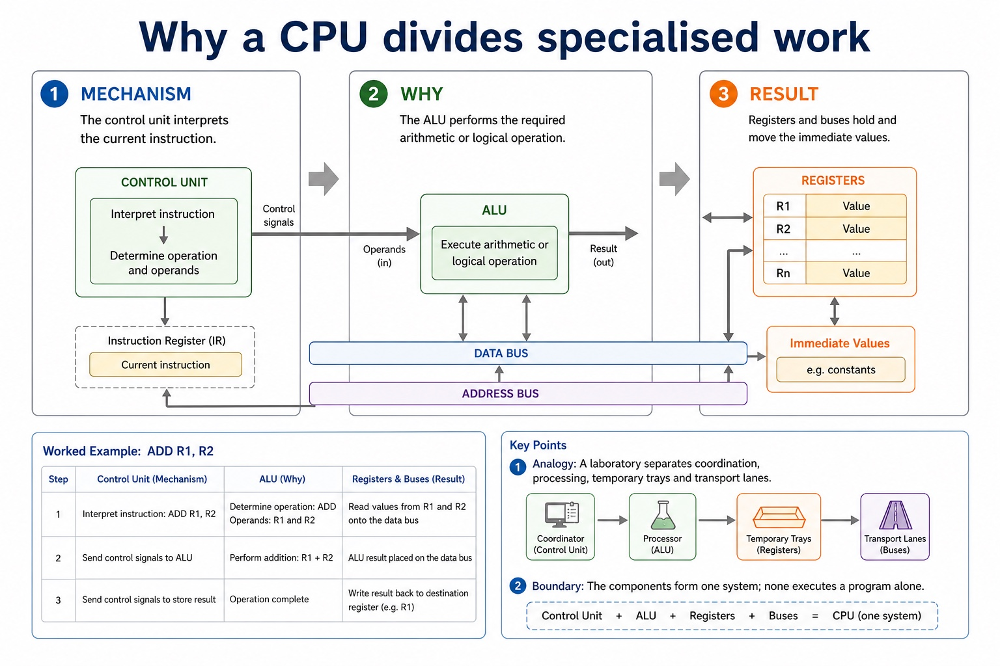

Von Neumann architecture and the stored-program concept
S4.01.A01
Visual overview
Why a CPU divides specialised work

Visual transcript
- The control unit interprets the current instruction.
- The ALU performs the required arithmetic or logical operation.
- Registers and buses hold and move the immediate values.
Core explanation
The basic Von Neumann architecture uses one immediate access store for the instructions and data currently required. This is the stored-program concept: program instructions are stored in memory as binary values alongside data, and the processor fetches instructions from memory rather than being physically rewired for each program.
The basic Von Neumann model and the stored-program concept
Von Neumann architecture and the stored-program concept.
![Accumulator (ACC) The accumulator commonly holds intermediate results from the ALU. For example, after adding two values, the result may be stored in the ACC. Status register The status register holds flags that describe the outcome of an operation or the processor state. Zero flag Can be set when an operation result is zero. Useful after comparisons or subtraction. Carry / overflow flags Can indicate a carry out or arithmetic overflow. Exact flag names vary by architecture, but the exam idea is that flags record result conditions. Common error The status register does not store the calculation result itself. It stores flags about the result.](../../assets/diagrams/stage10-infographics/stage10-lesson-044-acc-status.jpg)